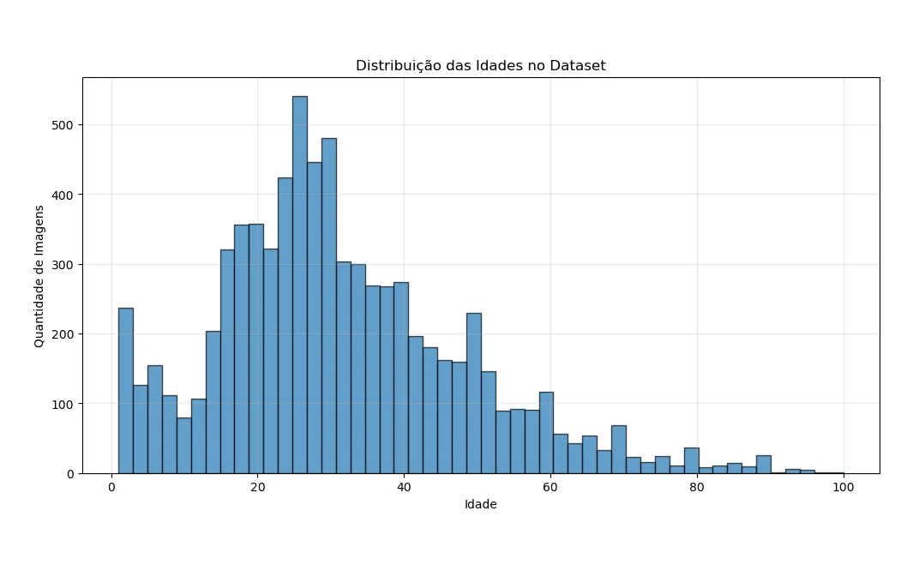
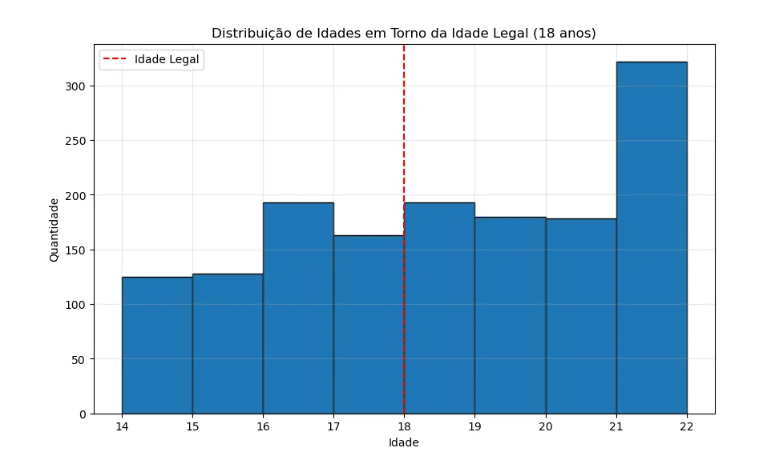

PortfólioModelos preditivos e estatística
Estimativa de idade por foto
Rede neural que estima a idade a partir de uma foto de rosto, pensada para conferir idade na venda de bebida alcoólica. A ResNet50 pré-treinada foi usada sem ajuste dos pesos. O erro médio na validação ficou em 12,91 anos.
- Contexto
- Bootcamp de Ciência de Dados, TripleTen
- Problema
- Regressão: idade em anos a partir da imagem
- Dados
- 7.591 fotos de rosto com a idade real
- Métrica
- Erro médio absoluto (MAE), em anos
Objetivo
Estimar a idade de um cliente pela foto do rosto, para apoiar a conferência de idade na venda de bebida alcoólica.
Métrica: erro médio absoluto (MAE), em anos, no conjunto de validação.
Dados
- OrigemPasta com fotos de rosto e um CSV com o nome do arquivo e a idade real, fornecidos pelo curso.
- Tamanho7.591 fotos, sem valores ausentes. Divisão de 75% para treino (5.694) e 25% para validação (1.897).
- IdadeDe 1 a 100 anos. Média 31,2, mediana 29, desvio padrão 17,1. Concentração entre 20 e 40 anos.
- Faixa crítica907 fotos entre 16 e 20 anos (11,9%). De 128 a 193 fotos por idade entre 15 e 22 anos.
Organização
O notebook gera um script .py e o executa num servidor com GPU.
Arquitetura da rede
Modelos e métricas
Erro médio absoluto (anos)
Queda de 0,20 ano na validação em 20 épocas.
Fotos por grupo etário
Total de 7.591 fotos.
Curva de treino
Achados
de erro médio na validação: a estimativa erra, em média, 13 anos para mais ou para menos.
de ganho na validação entre a 1ª e a 20ª época: o modelo parou de aprender cedo.
validação abaixo do treino: não há sobreajuste. O limite está na capacidade do modelo.
das fotos são de menores de 18 anos: há exemplos suficientes da faixa crítica.
Limites
- Rede congeladaA ResNet50 não foi ajustada às fotos de rosto. Só as camadas finais aprenderam.
- Erro alto para o usoCom erro médio de 13 anos, o modelo não serve para decidir se a pessoa tem 18 anos.
- Alternativa indicadaTratar o caso como classificação (menor ou maior de 18) e liberar o ajuste das últimas camadas.
- Poucos idososHá menos fotos acima de 60 anos. O erro tende a crescer nessa faixa.
Gráficos do notebook
Imagens geradas pelo notebook. As fotos de exemplo do notebook não aparecem aqui porque mostram rostos de pessoas reais.



